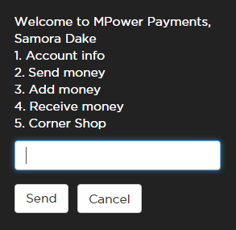
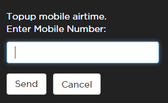
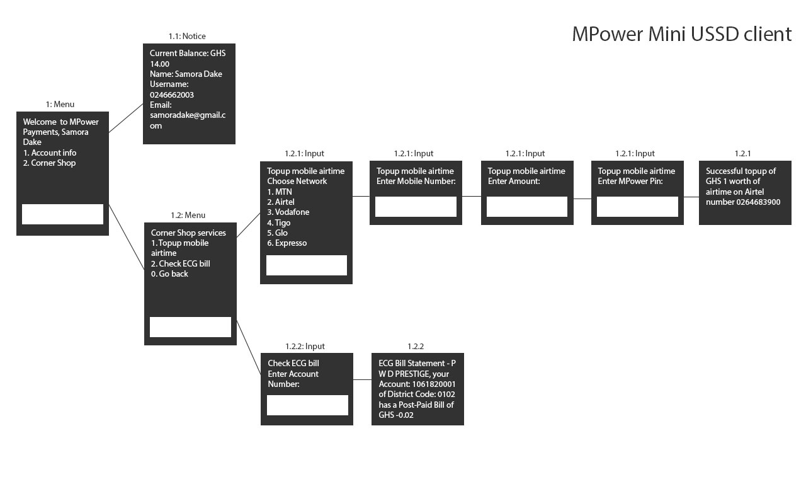

Intro to SMSGH USSD Framework
Build and maintain USSD apps with ease and sanity.
Presented by Samora Dake / @papasamo247
Features
- Session management
- Menu/screen navigation
- Resume timed out USSD sessions at last screen
- Collect and prepare user inputs
- Fully asycnchronous
Fundamental concepts

Screens
Menu

Screens
Notice
Screens
Input

Screen addresses
